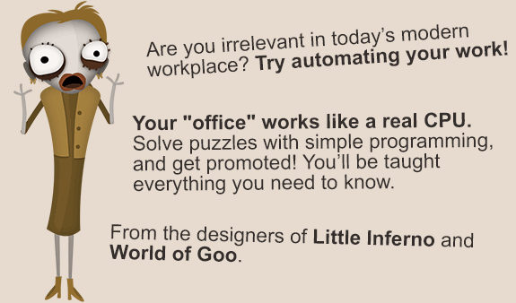

<!DOCTYPE html>
<html lang="en">
  <head>
    <meta charset="utf-8" />
    <meta name="viewport" content="width=device-width, initial-scale=1.0, maximum-scale=1.0, user-scalable=no" />

    <title>Datamaskinen</title>
    <link rel="stylesheet" href="dist/reveal.css" />
    <link rel="stylesheet" href="dist/theme/black.css" id="theme" />
    <link rel="stylesheet" href="plugin/highlight/monokai.css" />
	<link rel="stylesheet" href="css/layout.css" />
	<link rel="stylesheet" href="plugin/customcontrols/style.css">
	<link rel="stylesheet" href="plugin/chalkboard/style.css">

    <link rel="stylesheet" href="css/presentable.css" />

    <script defer src="dist/fontawesome/all.min.js"></script>

	<script type="text/javascript">
		var forgetPop = true;
		function onPopState(event) {
			if(forgetPop){
				forgetPop = false;
			} else {
				parent.postMessage(event.target.location.href, "app://obsidian.md");
			}
        }
		window.onpopstate = onPopState;
		window.onmessage = event => {
			if(event.data == "reload"){
				window.document.location.reload();
			}
			forgetPop = true;
		}

		function fitElements(){
			const itemsToFit = document.getElementsByClassName('fitText');
			for (const item in itemsToFit) {
				if (Object.hasOwnProperty.call(itemsToFit, item)) {
					var element = itemsToFit[item];
					fitElement(element,1, 1000);
					element.classList.remove('fitText');
				}
			}
		}

		function fitElement(element, start, end){

			let size = (end + start) / 2;
			element.style.fontSize = `${size}px`;

			if(Math.abs(start - end) < 1){
				while(element.scrollHeight > element.offsetHeight){
					size--;
					element.style.fontSize = `${size}px`;
				}
				return;
			}

			if(element.scrollHeight > element.offsetHeight){
				fitElement(element, start, size);
			} else {
				fitElement(element, size, end);
			}		
		}


		document.onreadystatechange = () => {
			fitElements();
			if (document.readyState === 'complete') {
				if (window.location.href.indexOf("?export") != -1){
					parent.postMessage(event.target.location.href, "app://obsidian.md");
				}
				if (window.location.href.indexOf("print-pdf") != -1){
					let stateCheck = setInterval(() => {
						clearInterval(stateCheck);
						window.print();
					}, 250);
				}
			}
	};


        </script>
  </head>
  <body>
    <div class="reveal">
      <div class="slides"><section  data-markdown><script type="text/template">
# Datamaskinen
<!-- .slide: data-background-opacity=".2" data-background-image="pexels/technology-computer-lines-board-50711.jpg" -->
Hvordan virker den?
</script></section><section  data-markdown><script type="text/template"># Binærtall
<!-- .slide: data-background-opacity=".3" data-background-image="pexels/blue-bright-lights-373543.jpeg" -->
Dere har sikkert hørt om at maskiner er 1'er og 0'er...<!-- .element: class="fragment" -->

Men hva er en maskin?<!-- .element: class="fragment" -->

Hva er dens funksjon?<!-- .element: class="fragment" -->
</script></section><section  data-markdown><script type="text/template"># Kort om binærtall
<!-- .slide: data-background-opacity=".3" data-background-image="pexels/blue-bright-lights-373543.jpeg" -->
- Annet navn: Totallsystem<!-- .element: class="fragment" -->
- 1 bit: 0 eller 1<!-- .element: class="fragment" -->
- 8 bits = 0000 0000 - 1111 1111 (256 ulike verdier)<!-- .element: class="fragment" -->
- 24/30 bits farge = standard for skjerm, 256 R,G,B.<!-- .element: class="fragment" -->
- b = bit, B = Byte<!-- .element: class="fragment" -->
- 8 bits = 1 byte <!-- .element: class="fragment" -->
- 1kB = 1000B, 1GB = 1000kB, 1TB = 1000GB<!-- .element: class="fragment" -->
</script></section><section  data-markdown><script type="text/template"><iframe width="1120" height="630" src="https://www.youtube.com/embed/mCq8-xTH7jA?controls=0" title="YouTube video player" frameborder="0" allow="accelerometer; autoplay; clipboard-write; encrypted-media; gyroscope; picture-in-picture" allowfullscreen></iframe></script></section><section  data-markdown><script type="text/template"># En datamaskin?
<p style="line-height: 0" class="reset-paragraph image-paragraph"></img></p>

</script></section><section  data-markdown><script type="text/template"><p style="line-height: 0" class="reset-paragraph image-paragraph"></img></p>

</script></section><section  data-markdown><script type="text/template"><p style="line-height: 0" class="reset-paragraph image-paragraph"></img></p>

</script></section><section  data-markdown><script type="text/template"><p style="line-height: 0" class="reset-paragraph image-paragraph"></img></p>

</script></section><section  data-markdown><script type="text/template">
<p style="line-height: 0" class="reset-paragraph image-paragraph"></img></p>

</script></section><section  data-markdown><script type="text/template"># Hva er dette?
<p style="line-height: 0" class="reset-paragraph image-paragraph"></img></p>

</script></section><section  data-markdown><script type="text/template"># Dette?
<p style="line-height: 0" class="reset-paragraph image-paragraph"></img></p>

</script></section><section  data-markdown><script type="text/template"># Komponenter - CPU
<!-- .slide: data-background-opacity=".3" data-background-image="pexels/person-holding-an-intel-processor-5553596.jpg" -->
Sentral Prosesseringsenhet
</script></section><section  data-markdown><script type="text/template"># Hva gjør en CPU?
<!-- .slide: data-background-opacity=".3" data-background-image="pexels/selective-focus-photography-of-motherboard-1432673.jpg" -->
En CPU er i bunn og grunn ikke smart i seg selv, den kan regne ut enkle mattestykker (+ og -) og utføre enkel logikk (**_Minecraft Redstone_**)

Delt inn i kjerner / tråder, som utfører operasjonene, antall operasjoner måles i Hz (operasjoner per sekund).<!-- .element: class="fragment" -->

1GHz = 1 000 000 000Hz.<!-- .element: class="fragment" -->

16 Tråder, 4GHz, = 64 000 000 000 enkle mattestykker i sekundet<!-- .element: class="fragment" -->
</script></section><section  data-markdown><script type="text/template"># CPUens ansvar
<!-- .slide: data-background-opacity=".3" data-background-image="pexels/selective-focus-photography-of-motherboard-1432673.jpg" -->
- utføre kalkulasjoner<!-- .element: class="fragment" -->
- hvor spilleren skal stå<!-- .element: class="fragment" -->
- fysikksimulering<!-- .element: class="fragment" -->
- hvor mye liv har karakterene osv...<!-- .element: class="fragment" -->
- innholdet i programmene maskinen kjører<!-- .element: class="fragment" -->
- prosessere/behandle/lagre/lese data<!-- .element: class="fragment" -->
- delegere oppgaver til resten av datamaskinen <!-- .element: class="fragment" -->

Dere skal få prøve dere som en CPU tråd senere. <!-- .element: class="fragment" --> (Human Resource Machine)<!-- .element: class="fragment" -->
</script></section><section  data-markdown><script type="text/template"># RAM
<!-- .slide: data-background-opacity=".3" data-background-image="pexels/green-and-black-computer-ram-stick-6636474.jpg" -->
Random Access Memory - Korttidsminne<!-- .element: class="fragment" -->

Lagring av det som er aktivt nå<!-- .element: class="fragment" -->

Tett på prosessoren - de er gode venner!<!-- .element: class="fragment" -->

I Human Resource Machine prater dere ofte med RAMen<!-- .element: class="fragment" -->
</script></section><section  data-markdown><script type="text/template"># MOBO (Hovedkort)
<!-- .slide: data-background-opacity=".3" data-background-image="pexels/green-motherboard-163140.jpg" -->
Der man kobler ting til<!-- .element: class="fragment" -->

Busser som transporterer informasjon mellom komponentene, fra sentral prosesseringsenhet (sjefen)<!-- .element: class="fragment" -->

Ekspansjonsspor (PCIe / M.2) for rask lagring, utvidelseskort (grafikkort), USB & nettverk. osv.<!-- .element: class="fragment" -->
</script></section><section  data-markdown><script type="text/template"># Grafikkort (GPU)
<!-- .slide: data-background-opacity=".3" data-background-image="pexels/person-holding-a-graphics-card-10558582.jpg" -->
En egen datamaskin med eget RAM (faktisk)<!-- .element: class="fragment" -->

Spesiallaget for å utføre matematiske regnestykker egnet til tegning av grafikk raskere enn en tradisjonell CPU<!-- .element: class="fragment" -->

Avlaster prosessoren ved å tegne innhold som skal til skjermene<!-- .element: class="fragment" -->
</script></section><section  data-markdown><script type="text/template"># Og mer
<!-- .slide: data-background-opacity=".3" data-background-image="pexels/blue-bright-lights-373543.jpeg" -->
- Strømforsyning (Effektivitet / bærekraft)<!-- .element: class="fragment" -->
- Lagringsmedier (HDD, SSD)<!-- .element: class="fragment" -->
- Periferi (Mus, tastatur, skjerm)<!-- .element: class="fragment" -->
- Nettverkskort<!-- .element: class="fragment" -->
- Lydkort<!-- .element: class="fragment" -->
- ASIC (Spesialbrukskort, crypto)<!-- .element: class="fragment" -->
</script></section><section  data-markdown><script type="text/template"># Hvordan kommuniserer komponentene?
<!-- .slide: data-background-opacity=".3" data-background-image="pexels/green-and-white-line-illustration-225769.jpg" -->
Maskinspråk (Assembly)<!-- .element: class="fragment" --> 

Super elementært - kan kun gjøre de enkleste ting!<!-- .element: class="fragment" -->

Fra maskinspråk er det utviklet programmeringsspråk (Windows = C, C++, C#. MacOS = Objective C, C) <!-- .element: class="fragment" -->
</script></section><section  data-markdown><script type="text/template"># Prøv dere som CPU
<p style="line-height: 0" class="reset-paragraph image-paragraph"></img></p>


https://spill.iktim.no/human_resource_machine

Må være på IKT IM Wifi</script></section></div>
    </div>

    <script src="dist/reveal.js"></script>

    <script src="plugin/markdown/markdown.js"></script>
    <script src="plugin/highlight/highlight.js"></script>
    <script src="plugin/zoom/zoom.js"></script>
    <script src="plugin/notes/notes.js"></script>
    <script src="plugin/math/math.js"></script>
	<script src="plugin/mermaid/mermaid.js"></script>
	<script src="plugin/chart/chart.min.js"></script>
	<script src="plugin/chart/plugin.js"></script>
	<script src="plugin/customcontrols/plugin.js"></script>
	<script src="plugin/chalkboard/plugin.js"></script>

    <script>
      function extend() {
        var target = {};
        for (var i = 0; i < arguments.length; i++) {
          var source = arguments[i];
          for (var key in source) {
            if (source.hasOwnProperty(key)) {
              target[key] = source[key];
            }
          }
        }
        return target;
      }

	  function isLight(color) {
		let hex = color.replace('#', '');

		// convert #fff => #ffffff
		if(hex.length == 3){
			hex = `${hex[0]}${hex[0]}${hex[1]}${hex[1]}${hex[2]}${hex[2]}`;
		}

		const c_r = parseInt(hex.substr(0, 2), 16);
		const c_g = parseInt(hex.substr(2, 2), 16);
		const c_b = parseInt(hex.substr(4, 2), 16);
		const brightness = ((c_r * 299) + (c_g * 587) + (c_b * 114)) / 1000;
		return brightness > 155;
	}

	var bgColor = getComputedStyle(document.documentElement).getPropertyValue('--r-background-color').trim();

	if(isLight(bgColor)){
		document.body.classList.add('has-light-background');
	} else {
		document.body.classList.add('has-dark-background');
	}

      // default options to init reveal.js
      var defaultOptions = {
        controls: true,
        progress: true,
        history: true,
        center: true,
        transition: 'default', // none/fade/slide/convex/concave/zoom
        plugins: [
          RevealMarkdown,
          RevealHighlight,
          RevealZoom,
          RevealNotes,
          RevealMath.MathJax3,
		  RevealMermaid,
		  RevealChart,
		  RevealCustomControls,
		  RevealChalkboard, 
        ],

		mathjax3: {
			mathjax: 'plugin/math/mathjax/tex-mml-chtml.js',
		},

		customcontrols: {
			controls: [
				{ icon: '<i class="fa fa-pen-square"></i>',
				title: 'Toggle chalkboard (B)',
				action: 'RevealChalkboard.toggleChalkboard();'
				},
				{ icon: '<i class="fa fa-pen"></i>',
				title: 'Toggle notes canvas (C)',
				action: 'RevealChalkboard.toggleNotesCanvas();'
				},
			]
		},
      };

      // options from URL query string
      var queryOptions = Reveal().getQueryHash() || {};

      var options = extend(defaultOptions, {"width":960,"height":700,"margin":0.04,"controls":true,"progress":true,"slideNumber":false,"transition":"slide","transitionSpeed":"default"}, queryOptions);
    </script>

    <script>
      Reveal.initialize(options);
    </script>
  </body>
</html>
